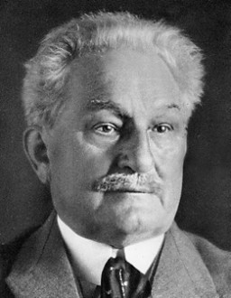

Leoš Janáček
Život a díla
Tento skladatel prošil své dětství v Husvaldech na Lašsku. Vystudoval pražskou varhanickou školu a potom působil v Brně jako ředitel varhanické školy v Brně. Mimo jiné byl také významným sběratelem lidových písní a rád si zapisoval nápěvky řači v každodenním životě.
V zahraniči i u nás ho proslavily opery (Její pastorkyňa, Příhody lišky bystroušky...). Jeho orchestrální Lašské tance připomínají kraj, kde se narodil. Básnická sbírka Slezské písně od Petra Bezruče ho inspirovala k napsáníněkolika mužských sborů (Maryčka Magdónová). V dechovém sextu Mládí vzpomíná skladatel na svá mladá léta - Pochod podráčků - sbor do kterého chodil jako v mládí měl modré uniformy a přezdívalo se jim "modráčci", tak od toho ten název. Jeho hudba je temperamentní, ale i něžně zpěvná jako lidová píseň.